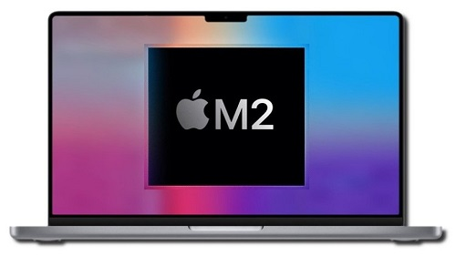
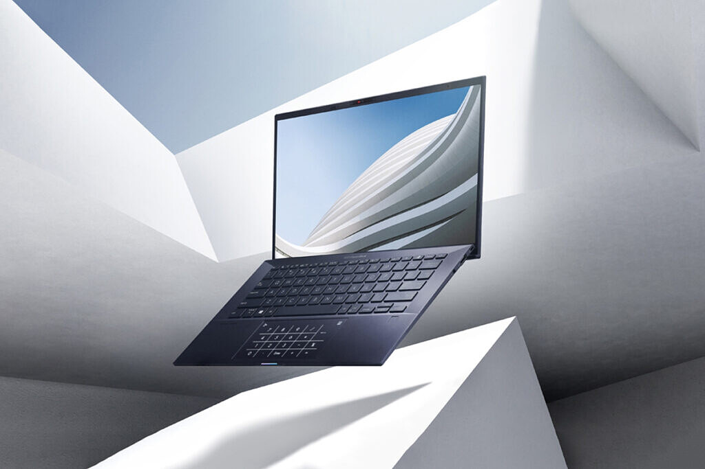
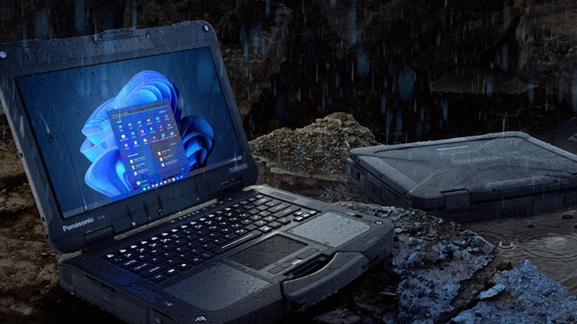

-
تکنولوژی
دستهبندی
تکنولوژی>لپ تاپ
جدیدترین اخبار حوزه های متنوع تکنولوژی: موبایل، تبلت، لپ تاپ، گجت،اپلیکیشن، بازی، دوربین و …
داغ ترین مطالب
آخرین اخبار
تولیدکنندگان لپتاپ بهدنبال حذف جک هدفون هستند
جک هدفون در لپتاپها کارایی خیلی زیادی ندارد؛ اما حذف آن میتواند تاثیرات زیادی در طراحی لپتاپ داشته باشد.
مکبوک ایر M2 هم مانند مدل پرو در نسخه پایه حافظه SSD کندتری دارد
سرعت حافظه SSD مکبوک پرو M2 در مدل پایه بسیار کمتر از مکبوک پرو M1است .
شیائومی بوک پرو 2022 در دو اندازه 14 و 16 اینچی معرفی شد
شیائومی از لپ تاپ «شیائومی بوک پرو 2022» در دو اندازه 14 و 16 اینچی رونمایی کرد. هر دو دستگاه دارای قابلیتهای مشابه و منحصربهفردی هستند ...
تاریخ احتمالی پیش فروش و عرضه مک بوک ایر M2 اپل مشخص شد
اپل اوایل ماه جاری در رویداد WWDC 2022 از نسل جدید مک بوک ایر در کنار مک بوک پرو جدید رونمایی کرد. در حالی که مک بوک پرو با تراشه M2 هم اکنون وارد بازار شده، ...

عقبگرد بزرگ اپل؛ کاهش 50 درصدی سرعت SSD در مدل پایه مکبوک پرو M2
با عرضه مکبوک پرو 13 اینچی M2 که در مدل پایه با 256 گیگابایت حافظه SSD با قیمت 1299 دلار فروخته میشود، بررسیها نشان میدهد که سرعت خواندن و نوشتن اطلاعات در این لپتاپ نسبت ...
عملکرد درخشان باتری مکبوک پرو M2؛ بیش از 16 ساعت با لپتاپ اپل کار کنید
مهاجرت اپل به تراشههای اختصاصی به این معناست که کاربران دیگر لازم نیست نگران عمر باتری لپتاپ خود باشند.
مایکروسافت از سرفیس لپتاپ گو 2 رونمایی کرد؛ پردازنده نسل یازدهم با قیمت اقتصادی
مایکروسافت رسما از نسخه جدید جمعوجورترین و مقرونبهصرفهترین محصول خود در سری لپتاپهای سرفیس یعنی «سرفیس لپتاپ گو 2» با پردازده جدیدتر نسل یازدهم اینتل و قیمت 600 دلار رونمایی کرد.

لپتاپهای جدید Vaio با پردازندههای نسل 12 اینتل و ویندوز 11 معرفی شدند
پس از جدایی Vaio از سونی، اکنون نسل جدید لپ تاپهای Vaio پس از انتظارات فراوان با پردازندههای نسل 12 اینتل و ویندوز 11 معرفی شده است.
آخرین اخبار

اپل ظاهرا روی توسعه نسخه جدیدی از مک بوک با پشتیبانی از قلم کار میکند
ظاهرا غول فناوری همچنان برنامههایی برای پشتیبانی از اپل پنسل در یکی از نسخههای آینده مک بوک را دارد. طبق تصاویر و ...
بلومبرگ: منتظر عرضه مک بوک ایر 2022 در رنگهای متنوع نباشید
مارک گورمن گفته: این محصول با رنگهای یکسان با نسل قبلیاش از راه میرسد.
نسخه جدید مک بوک پرو 13 اینچی اپل با چیپ M2 معرفی شد
در جریان کنفرانس WWDC 2022، اپل علاوه بر تراشه M2 از نسخه جدید مک بوک پرو نیز رونمایی کرد. مک بوک پرو 13 اینچی از چیپ M2 بهره میبرد و از نظر طراحی شبیه به ...
هرآنچه باید درباره مک بوک ایر و مک بوک پرو M2 اپل بدانید
اپل در کنفرانس WWDC 2022 از نسل جدید مک بوک ایر و نسخه جدید مک بوک پرو رونمایی کرد. این محصولات به تراشه جدید M2 مجهز شدهاند .
سامسونگ خط تولید جدید نمایشگرهای OLED آیپد و مک بوک اپل را راهاندازی میکند
به گفته منابع کرهای، سامسونگ قصد دارد خط تولید جدیدی در کره جنوبی برای ساخت نمایشگرهای OLED بزرگتر تبلتها و نوت بوکها راه اندازی کند و همچنین گفته میشود که غول فناوری کرهای قصد دارد ...
ایسوس از سبکترین لپتاپ 14 اینچی خود رونمایی کرد: ExpertBook B9
ایسوس از دو لپ تاپ جدید با نامهای ExpertBook B9 و ExpertBook B9 Flip رونمایی کرد.
MSI از لپ تاپ گیمینگ جدید Titan GT77 با نمایشگر 4K رونمایی کرد
شرکت اماسای (MSI) در کنفرانس مطبوعاتی MSIology خود از لپ تاپ گیمینگ جدید و قدرتمند Titan GT77 رونمایی کرد که از مشخصات کاملا چشمگیر و قابلتوجهی مانند نمایشگر 4K بهره میبرد.
لنوو دو لپتاپ گیمینگ جدید با پردازندههای رایزن 6000 AMD معرفی کرد
لنوو از دو لپتاپ جدید گیمینگ رونمایی کرد. این دو مدل با نامهای R7000P 2022 و R9000P 2022 در سری لژیون قرار دارند و به تراشههای سری رایزن 6000 ...
آخرین اخبار
لپتاپ جانسخت و ماژولار Toughbook 40 پاناسونیک با قیمت نجومی معرفی شد
پاناسونیک از لپتاپ Toughbook40 رونمایی کرده که برای مشتریانی مانند ارتش،پلیس و شرکتهای تاسیساتی است.

اچپی برای نخستین بار نمایشگر OLED را به یک لپتاپ پاویلیون آورد
اچپی از نسخه جدید لپتاپهای پاویلیون با قطعات و ویژگیهای تازه رونمایی کرد.
هواوی از چهار لپتاپ جدید با پردازندههای نسل دوازدهم اینتل رونمایی کرد
هواوی چهار لپتاپ به همراه یک مانیتور جدید را معرفی کرد که تمامی این لپتاپها مجهز به پردازندههای نسل 12 اینتل هستند و از 16 گیگابایت رم و حداقل 512 .
ایسر از کروم بوک Spin 714 و تبلت Tab 510 رونمایی کرد
ایسر در رویداد Next At Acer، از کروم بوک جدیدی با نام Spin 714 رونمایی کرد. همچنین در این رویداد از تبلت جدیدی با نام Tab 510 نیز رونمایی شد .

ایسوس از لپتاپ گیمینگ ROG Flow X16 با نمایشگر Mini LED رونمایی کرد
ایسوس یک لپتاپ 16 اینچی به سری لپتاپهای ROG Flow اضافه کرد. این محصول که ایسوس ROG Flow X16 نام دارد، یک محصول دو در یک قدرتمند برای مصارف مختلف ازجمله اجرای بازیهای روز .
ایسوس از دو لپ تاپ جدید سری Zenbook با پردازندههای AMD و اینتل رونمایی کرد
ایسوس، از لپتاپهای جدیدی در سری Zenbook رونمایی کرد که Zenbook 13S و Zenbook Pro 15 Flip نام دارند.
ایسوس زنبوک 14X نسخه فضایی مجهز به نمایشگر ثانویه کوچک عرضه شد
ایسوس نسخه فضایی لپتاپ Zenbook 14X با نمایشگر 14 اینچی OLED درکنار بهرهمندی از نمایشگر ثانویه کوچک OLED با اندازه 3.5 اینچی و پردازنده Core-i9 نسل دوازدهم را با قیمت پایه ۱۹۹۹ دلار عرضه کرد.
دل XPS 15 و XPS 17 با پردازندههای نسل دوازدهم اینتل بروز شدند
شرکت دل از مدل 2022 لپتاپهای XPS 15 و XPS 17 با پردازندههای نسل دوازدهم اینتل رونمایی کرد به ترتیب با قیمت پایه 1449 و 1849 دلار .